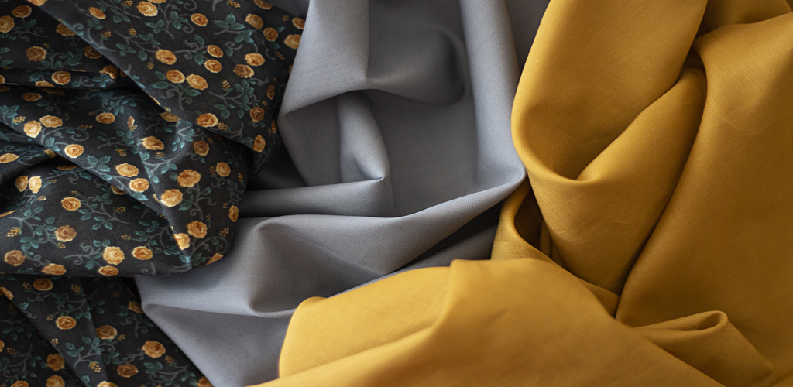
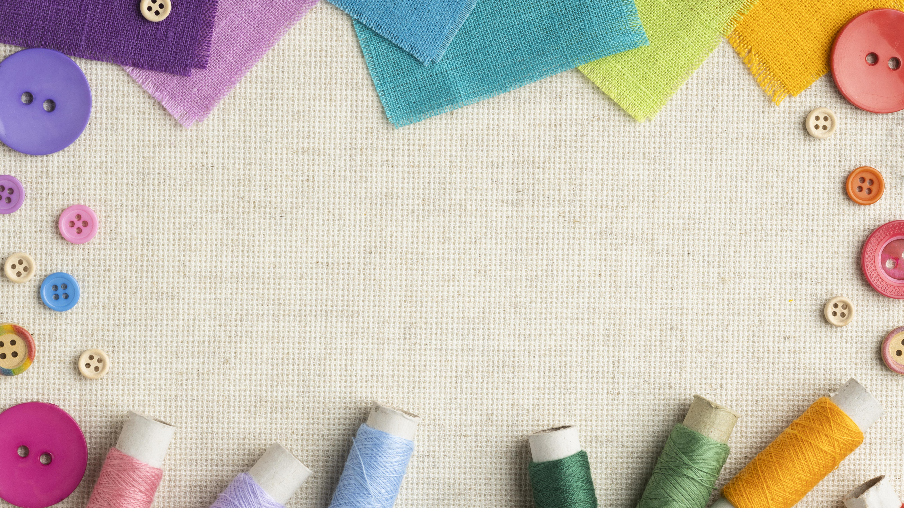
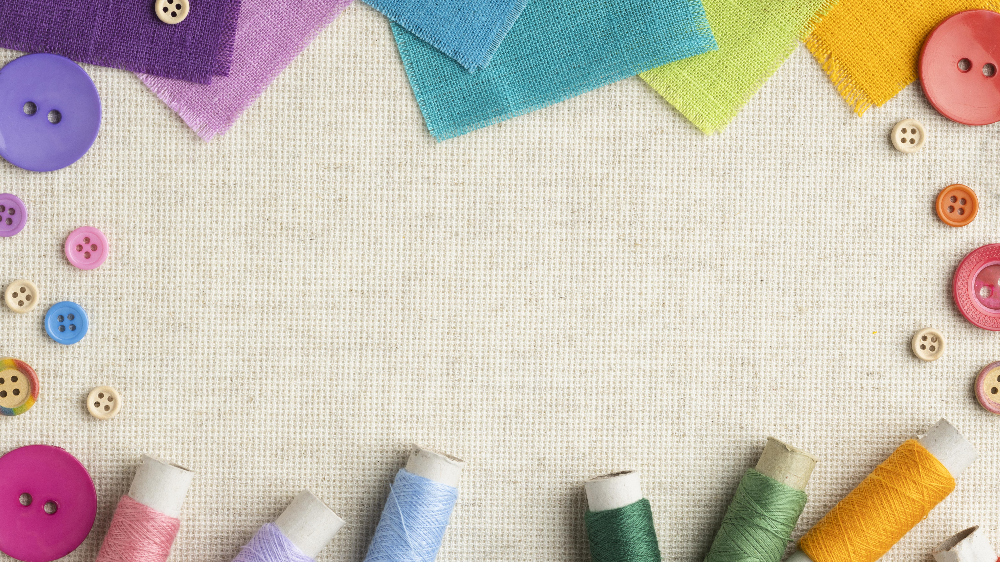
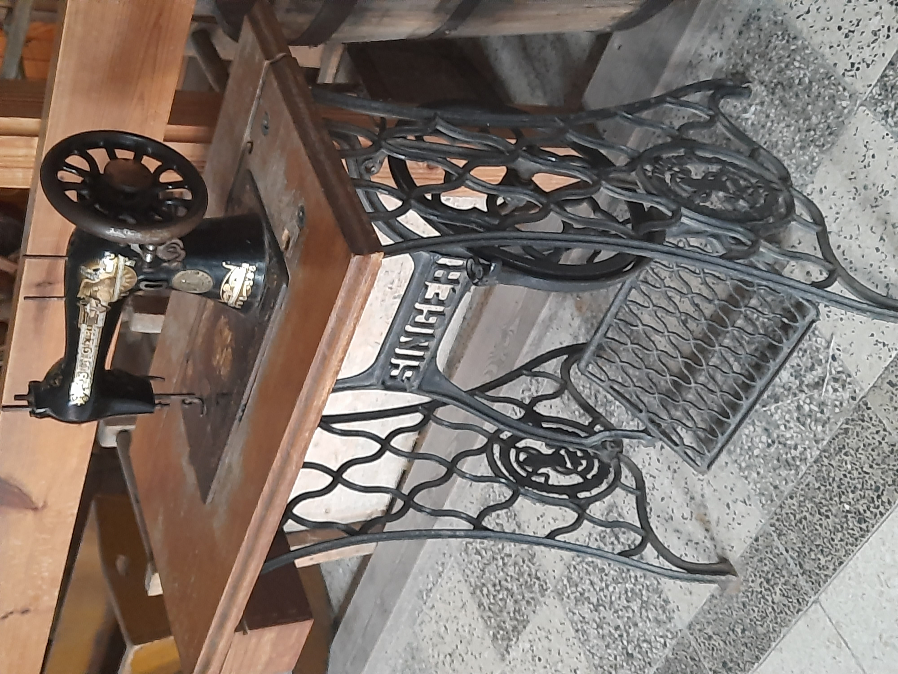
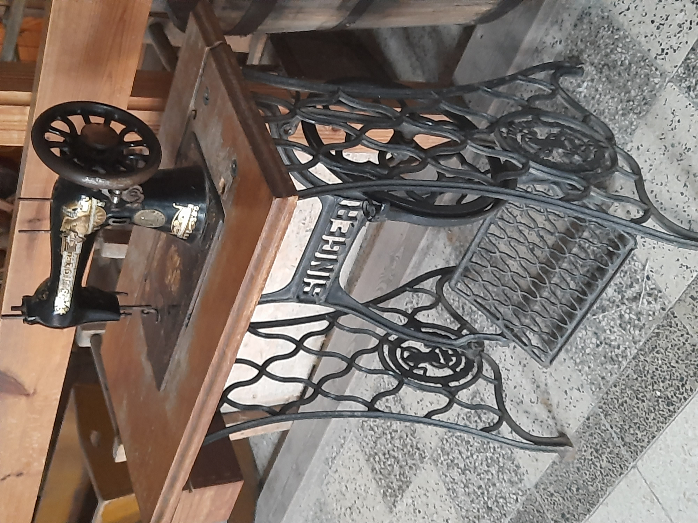

Firma powstała w 2007 roku. Zajmuje się wykonywaniem projektów, związanych z branżą krawiecką. Prowadzi punk usługowy w zakresie poprawek krawieckich oraz szycia na miarę. Wykonujemy przeszycia i zlecenia indywidualne. Posiadamy duże doświadczenie w szyciu dzianin, bawełny, polaru, materiałów skóropodobnych, ortalionów. Nasz park maszynowy pozwala na obróbkę ww materiałów.
Usługi Krawieckie


 

 
